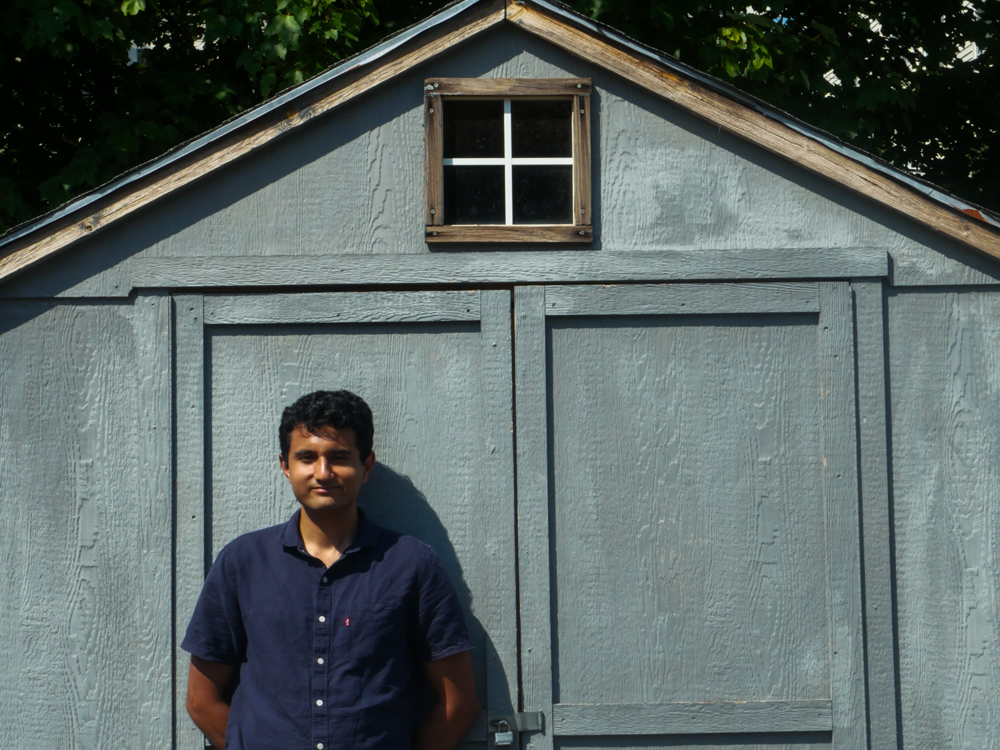

Amogh Dwivedi is a musician who is keen to realize his musical thoughts in a variety of different ways, be it procedurally generated music in Max/MSP, music written out by hand, or by improvising at the piano. His concert works have been played by Mivos Quartet, Mia Elezoviç, Iktus Percussion, and he additionally has had reading sessions with Sound Icon, and Berklee Contemporary Symphony Orchestra. His electronic music has been featured at the International Computer Music Conference 2025, PdMaxCon25~, Performing Media Festival 2025, and Bleep / Blorp Festival.
Growing up, Amogh heard music by the likes of Linkin Park, Avicii, deadmau5, Avenged Sevenfold, Metallica, Dream Theater, Animals as Leaders and Glenn Gould, although his first creative musical experiences came about when he started making electronic music in the vein of EDM styles as a teenager. He subsequently took music as a subject in high school.
As a double major at Berklee College of Music, he studied Composition with Marti Epstein, Ryan Suleiman, Don McDonnell, Yoon-Ji Lee, and Alla Cohen, and Electronic Production and Design with Matthew Davidson, Dr. Richard Boulanger, David Cardona, and Jason Petrin. Alongside working on his majors, Amogh acquired a taste for jazz, and studied piano with Christian Li, Doug Johnson, and Neil Olmstead, and remains invested in his growth as an improvisor. At Berklee, he received departmental awards for his work, namely the Max Mathews Award, the Bill Maloof Award, and the Leroy Southers Award, and graduated summa cum laude in May 2024.
At Berklee, Amogh had the privilege of being a tutor for Core Music Tutoring as well as the EPD department, where he discovered his passion for education and talking about music. He also served as the Vice President for the Society of Composers, one of Berklee's oldest student clubs, where he often led weekly meetings, helped organize concerts, and wrote weekly newsletters. Amogh is now a TA at California Institute of the Arts, where he is pursuing his MFA.
In his spare time, Amogh can be found on his e-bike around Santa Clarita, and consuming unimportant content on the internet.
